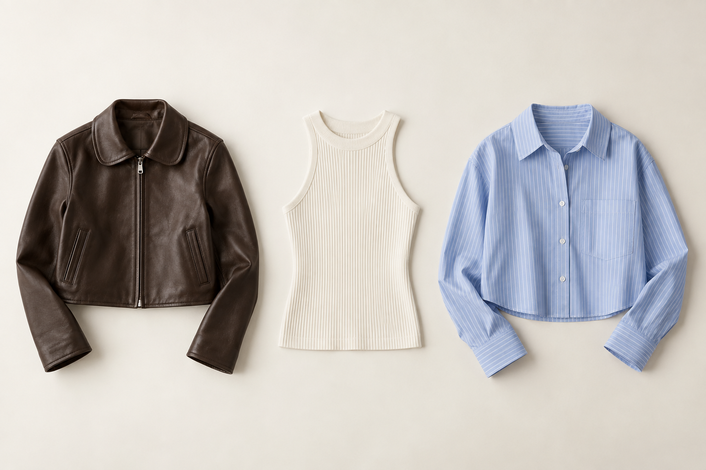
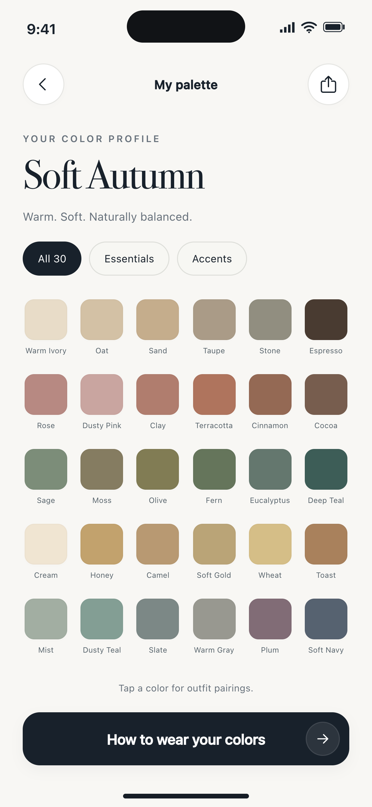

Find your color direction.
Create a personal color profile from a photo, or choose a season you already know. Keep your palette close when you shop.
Personal color, considered.
A little clarity for the clothes you choose.
Find your palette. Recognize your colors.
Build a wardrobe that feels like you.
Made for iPhone.
Designed around your everyday wardrobe.
A more personal way to see color.
Personal palettes
Clothing color checks
On-device photo analysis
A wardrobe, more you.
HueMuse brings personal color into the choices you make every day, from a new find to an old favorite.
Create a personal color profile from a photo, or choose a season you already know. Keep your palette close when you shop.
Check a clothing photo against your color profile. See how its colors relate to your palette before deciding.
Save clothing checks and favorite colors. Return to them when you want a little inspiration or a useful reference.


Inside HueMuse · Example color profile
Your palette, in your pocket.
A foundation of everyday neutrals. A few accents to make them your own. HueMuse gives your color profile a place in the way you dress.
An illustration of one palette, not an analysis of you.
A simple starting point.
Choose a clear, unfiltered photo in soft daylight. Good lighting helps you get a more useful color reference.
Explore your suggested personal colors. Already know your season? You can select it yourself.
Use your palette when checking clothing colors, and keep the pieces and shades you want to remember.
Color guidance is a starting point. Lighting, cameras, and screens can change how a color appears.
HueMuse analyzes face and clothing photos on your iPhone. Your photos are not uploaded to our analytics service.
Your saved profile, palettes, and clothing checks live in local app storage. Device backup settings may preserve separate copies.
Optional usage sharing is off by default. Subscription services process purchase information separately to provide paid access.
HueMuse helps you explore a personal color palette, compare clothing colors with your profile, and save colors and checks for later. It offers styling guidance, rather than a professional assessment or a guarantee of how an item will look.
No. Face and clothing photo analysis runs on your device. HueMuse does not upload those photos to its analytics service. Images you independently export, share, or back up are handled by the destination or your device settings.
Yes. You can manually choose your color season and use its palette as your reference. A manually chosen profile reflects your selection.
Some introductory access is available without a subscription, including one personal clothing check. Additional checks and premium tools require membership. The app and App Store purchase screen show the current features, prices, billing periods, and renewal conditions before you buy.
Manage or cancel billing in your Apple Account subscription settings. Use the app's privacy controls for local data and optional usage activity. Deleting photos, app data, or the app itself does not cancel a subscription. Read our User Agreement and Privacy Policy for the complete details.
We're here to help.
App support, subscription questions,
privacy requests, or just a little feedback.
CONTACT HUEMUSE
matt1232026@gmail.comEmail usFor support, include your app version and a short description of the issue. Please don't send passwords or payment card details.